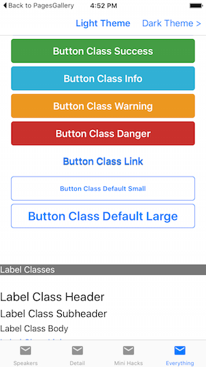

Xamarin.Forms Themes
StyleClass
The StypeClass property allows a view's appearance to be changed according to a definition provided by a theme.
The Light and Dark themes both define three different appearances for a BoxView: horizontalRul, Circel, and Rounded. This markup show three different BoxViews with different style classes applied:
<StackLayout Padding="40">
<BoxView StyleClass="HorizontalRule" />
<BoxView StyleClass="Circle" />
<BoxView StyleClass="Rounded" />
</StackLayout>
Built-in Classes
In addition to automatically styling the common controls the light and dark themes currently support the following classes that can be applied by setting the StyleClass on these controls.
BoxView
- HorizontalRule
- Circle
- Rounded
Image
- Circle
- Rounded
- Thumbnail
Button
- Default
- Primary
- Success
- Info
- Warning
- Danger
- Link
- Small
- Large
Label
- Header
- Subheader
- Body
- Link
- Inverse
Troubleshooting
Could not load file or assembly 'Xamarin.Form.Theme.Light' or one of it;s dependencies In the preview release, themes may not be able to load at runtime. Add the code shown below into the relevant project to fix this error.
iOS In the AppDelegate.cs add the following lines after LoadApplication
var x = typeof(Xamarin.Forms.Themes.DarkThemeResources);
x = typeof(Xamarin.Forms.Themes.LightThemeResources);
x = typeof(Xamarin.Forms.Themes.iOS.UnderlineEffect);
Android In the MainActivity.cs add the following lines after LoadApplication
var x = typeof(Xamarin.Forms.Themes.DarkThemeResources);
x = typeof(Xamarin.Forms.Themes.LightThemeResources);
x = typeof(Xamarin.Forms.Themes.Android.UnderlineEffect);
Xamarin.Forms Light Theme
-
Add Nuget packages
-
Xamarin.Forms.Theme.Base
-
Xamarin.Forms.Theme.Light
-
Add to the Resource Dictionary
In the App.xaml file add a new custom xmlns for the theme, and then ensure the theme's resources are merged with the application's resource dictionary. An example XAML file is shown below:
<?xml version="1.0" encoding="utf-8"?>
<Application xmlns="http://xamarin.com/schemas/2014/forms" xmlns:x="http://schemas.microsoft.com/winfx/2009/xaml" x:Class="EvolveApp.App"
xmlns:light="clr-namespace:Xamarin.Forms.Themes;assembly=Xamarin.Forms.Theme.Light">
<Application.Resources>
<ResourceDictionary MergedWith="light:LightThemeResources" />
</Application.Resources>
</Application>
- Load theme classes
Follow troubleshooting step.
- Use StyleClass 
<StackLayout Padding="20">
<Button Text="Button Default" />
<Button Text="Button Class Default" StyleClass="Default" />
<Button Text="Button Class Primary" StyleClass="Primary" />
<Button Text="Button Class Success" StyleClass="Success" />
<Button Text="Button Class Info" StyleClass="Info" />
<Button Text="Button Class Warning" StyleClass="Warning" />
<Button Text="Button Class Danger" StyleClass="Danger" />
<Button Text="Button Class Link" StyleClass="Link" />
<Button Text="Button Class Default Small" StyleClass="Small" />
<Button Text="Button Class Default Large" StyleClass="Large" />
</StackLayout>
Creating a Custom Xamarin.Forms Theme
Note the Class attribute for Style (as opposed to the x:Key attribute available in earlier version of Xamarin.Forms)
<ResourceDictionary>
<!-- DEFINE ANY CONSTANTS -->
<Color x:Key="SeparatorLineColor">#CCCCCC</Color>
<Color x:Key="iOSDefaultTintColor">#007aff</Color>
<Color x:Key="AndroidDefaultAccentColorColor">#1FAECE</Color>
<OnPlatform x:TypeArguments="Color" x:Key="AccentColor">
<On Platform="iOS" Value="{StaticResource iOSDefaultTintColor}" />
<On Platform="Android" Value="{StaticResource AndroidDefaultAccentColorColor}" />
</OnPlatform>
<!-- BOXVIEW CLASSES -->
<Style TargetType="BoxView" Class="HorizontalRule">
<Setter Property="BackgroundColor" Value="{ StaticResource SeparatorLineColor }" />
<Setter Property="HeightRequest" Value="1" />
</Style>
<Style TargetType="BoxView" Class="Circle">
<Setter Property="BackgroundColor" Value="{ StaticResource AccentColor }" />
<Setter Property="WidthRequest" Value="34"/>
<Setter Property="HeightRequest" Value="34"/>
<Setter Property="HorizontalOptions" Value="Start" />
<Setter Property="local:ThemeEffects.Circle" Value="True" />
</Style>
<Style TargetType="BoxView" Class="Rounded">
<Setter Property="BackgroundColor" Value="{ StaticResource AccentColor }" />
<Setter Property="HorizontalOptions" Value="Start" />
<Setter Property="BackgroundColor" Value="{ StaticResource AccentColor }" />
<Setter Property="local:ThemeEffects.CornerRadius" Value="4" />
</Style>
</ResourceDictionary>
You'll notice that the Rounded class refers to a custom effext CornerRadius. The code for this effect is given below - to reference it correctly a custom xmlns must be added to the App.xaml's root element:
xmlns:local="clr-namespace:ThemesDemo;assembly=ThemesDemo"
C# code in the .NET Standard library project or Shared Project
The code for creating a round-corner BoxView use effects. The corner radius is applied using a BindableProperty and is implemented by applying an effect. The effect requires platform-specific code in the iOS and Android projects(shown below).
namespace ThemesDemo
{
public static class ThemeEffects
{
public static readonly BindableProperty CornerRadiusProperty =
BindableProperty.CreateAttached("CornerRadius", typeof(double), typeof(ThemeEffects), 0.0, propertyChanged: OnChanged<CornerRadiusEffect, double>);
private static void OnChanged<TEffect, TProp>(BindableObject bindable, object oldValue, object newValue)
where TEffect : Effect, new()
{
if (!(bindable is View view))
{
return;
}
if (EqualityComparer<TProp>.Equals(newValue, default(TProp)))
{
var toRemove = view.Effects.FirstOrDefault(e => e is TEffect);
if (toRemove != null)
{
view.Effects.Remove(toRemove);
}
}
else
{
view.Effects.Add(new TEffect());
}
}
public static void SetCornerRadius(BindableObject view, double radius)
{
view.SetValue(CornerRadiusProperty, radius);
}
public static double GetCornerRadius(BindableObject view)
{
return (double)view.GetValue(CornerRadiusProperty);
}
private class CornerRadiusEffect : RoutingEffect
{
public CornerRadiusEffect()
: base("Xamarin.CornerRadiusEffect")
{
}
}
}
}
C# code in the iOS project
using System;
using Xamarin.Forms;
using Xamarin.Forms.Platform.iOS;
using CoreGraphics;
using Foundation;
using XFThemes;
namespace ThemesDemo.iOS
{
public class CornerRadiusEffect : PlatformEffect
{
private nfloat _originalRadius;
protected override void OnAttached()
{
if (Container != null)
{
_originalRadius = Container.Layer.CornerRadius;
Container.ClipsToBounds = true;
UpdateCorner();
}
}
protected override void OnDetached()
{
if (Container != null)
{
Container.Layer.CornerRadius = _originalRadius;
Container.ClipsToBounds = false;
}
}
protected override void OnElementPropertyChanged(System.ComponentModel.PropertyChangedEventArgs args)
{
base.OnElementPropertyChanged(args);
if (args.PropertyName == ThemeEffects.CornerRadiusProperty.PropertyName)
{
UpdateCorner();
}
}
private void UpdateCorner()
{
Container.Layer.CornerRadius = (nfloat)ThemeEffects.GetCornerRadius(Element);
}
}
}
C# code in the Android project
using System;
using Xamarin.Forms.Platform;
using Xamarin.Forms.Platform.Android;
using Android.Views;
using Android.Graphics;
namespace ThemesDemo.Droid
{
public class CornerRadiusEffect : BaseEffect
{
private ViewOutlineProvider _originalProvider;
protected override bool CanBeApplied()
{
return Container != null && Android.OS.Build.VERSION.SdkInt >= Android.OS.BuildVersionCodes.Lollipop;
}
protected override void OnAttachedInternal()
{
_originalProvider = Container.OutlineProvider;
Container.OutlineProvider = new CornerRadiusOutlineProvider(Element);
Container.ClipToOutline = true;
}
protected override void OnDetachedInternal()
{
Container.OutlineProvider = _originalProvider;
Container.ClipToOutline = false;
}
protected override void OnElementPropertyChanged(System.ComponentModel.PropertyChangedEventArgs args)
{
base.OnElementPropertyChanged(args);
if (!Attached)
{
return;
}
if (args.PropertyName == ThemeEffects.CornerRadiusProperty.PropertyName)
{
Container.Invalidate();
}
}
private class CornerRadiusOutlineProvider : ViewOutlineProvider
{
private Xamarin.Forms.Element _element;
public CornerRadiusOutlineProvider(Xamarin.Forms.Element element)
{
_element = element;
}
public override void GetOutline(Android.Views.View view, Outline outline)
{
var pixels =
(float)ThemeEffects.GetCornerRadius(_element) *
view.Resources.DisplayMetrics.Density;
outline.SetRoundRect(new Rect(0, 0, view.Width, view.Height), (int)pixels);
}
}
}
}
Summary
A custom theme can be created by defining styles for each control that requires custom appearance. Multiple styles for a control should be distinguished by different Class attributes in the resource dictionary, and then applied the StyleClass attribute on the control.
Get more information at here.